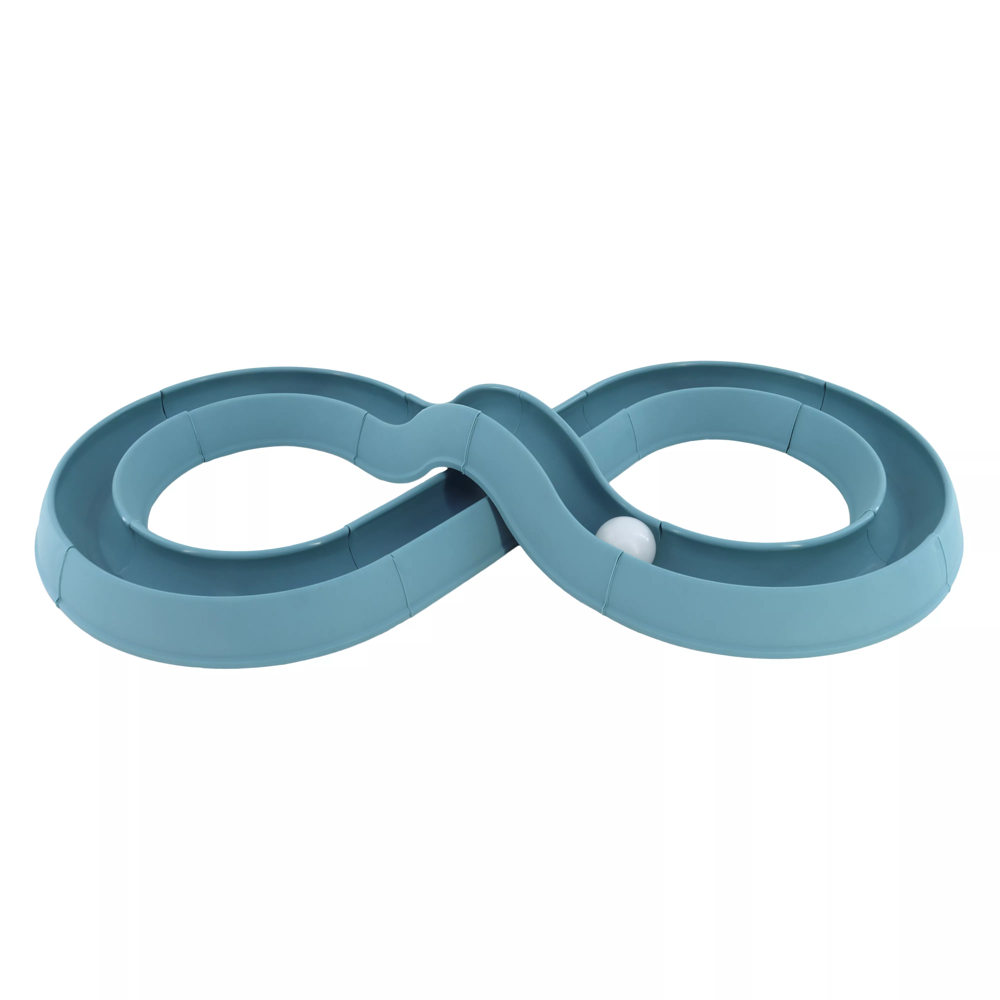
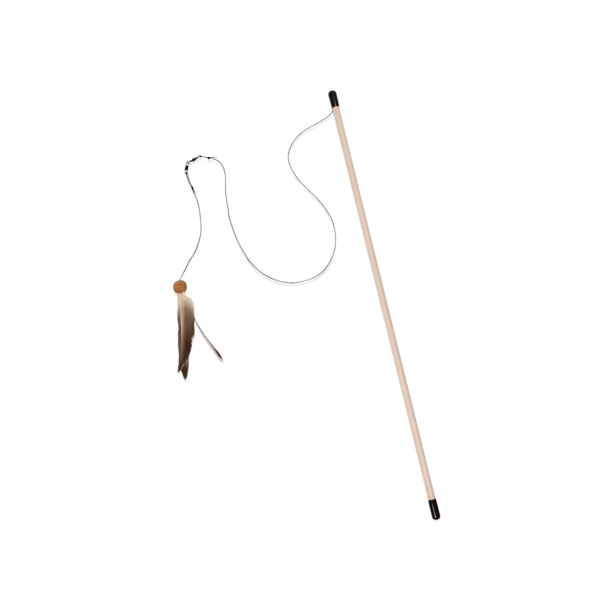
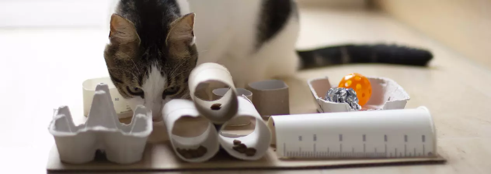
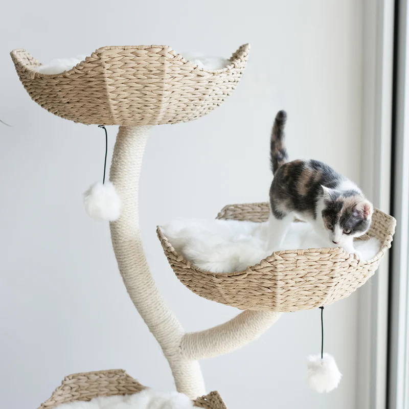

Why Enrichment Matters
Oftentimes, enrichment and play for cat's is often overlooked. When people get a dog, they understand that the dog needs "x" amount of hours a day set aside for training, play, or other activities that may be considered enrichment for their dog. Why not apply that same mindset for your cat? When you have a domesticated cat, you take care of the eat and drink part for free but leave out the rest: the stalk, pounce, "kill." At the end of the day, cat's have insticts, just like dogs and for them to be fulfilled, it's important to satisfy their needs. Bringing in toys and other forms of enrichment to your cat's life will help prevent boredom, keep them at a healthy weight and their joints mobile, and build confidence! There are a couple things to watch out for if you believe your cat might be bored such as excessie meowing, over-grooming or pulling out fur, attacking your ankles as you walk by, destructive scratching on furniture, etc. Now not every cat that does this is necessarily bored, some might just have quirks, but it's important to know the signs so you know when to make a change!
Solo Play
It's important to make sure that even when you are not home, your cat will have something to play with so they have an outlet for their energy. There a multitude different toys to choose from such as kick sticks. These are oversize, plush toys (often filled with catnip) that a cat can grab with their front paws and "bunny kick" with their back legs. It's a way for a cat to mimic how they would handle larger prey in the wild. Track & ball toys are another great choice to go with. They feature balls trapped within a circular track, a figure eight track, or sometime's multiple stacked tracks that are allow your cat to play with a ball without losing it under a couch or other piece of furniture. The sound of the ball spinning can help keep the cat engaged! Sometime's they might even have a cat scratching box in the center so they get the best of both worlds.

Track & Ball Figure Eight Toy
Interactive Play
Out of the three options for toys here, interactive play I believe is the "gold standard" for cat enrichment because it requires the participation of the owner! It builds a bond of trust while satisfying your cat's biological need to hunt. While solo toys are great for when you're gone, interactive toys allow for you to mimic the unpredictable movement of actual prey. A common option is a wand a toy. These typically are a stick of some sort with a string or wire attached to it that has an item that might be considered attractive to the cat (like a mouse, or feathers). Sometimes these attachments are replaceable so you can try a variety of different options and find the one your cat really enjoys to play with. Typically when you use one of these toys, you just swish it around on the floor since the wire is typically pretty long you get a decent bit of distance. Laser pointers are also another good choice for your cat These are definitely better for long distance as the laser is typically bright enough for them to see a ways away. However, it's important that you do not point the laser directly into your cat's eyes as this can cause permanent eye damage. If you do choose to use a laser pointer as a form of enrichment, be sure to end the session with a physical toy or treat to prevent frustration of chasing something they can't touch.

Cat Wand Toy
Food Puzzles & Foraging
Like dogs, by making a cat "work" for their food, you engage their natural problem-solving skills. It can slow down fast eaters and provide a boost in mental stimulation. There are many different types of food puzzles and foraging toys. Stationary puzzles consist of boards or mats that sit on the floor. A cat has to use their paws to "fish" dry food out of tubes or navigate through a maze. Now it might sound really confusing when reading, but they're not very difficult puzzles and cat's typically figure them out fairly quickly. Mobile food dispensers are typically balls or "egg-shaped" toys that you fill with food (or treats) that the cat has to roll in order to get the food to fall out. In some cases, you can adjust the hole size to control how easily the food falls out which provides a customizable level of difficulty as your cat bats it around. It's a good idea to start easy, as if the puzzle is too hard at first, your cat might get frustrated and give up. Use high value treats initially to show them that interacting with the toy results in a big reward! Lick mats are another great source of enrichment. They're designed for wet food, purees, or soft treats like pumpkin. Lick mats typically have a textured surface (nubs, ridges, or grooves) that traps the food and the cat must use their tongue to lick it out. If you have a dog, you probably have heard of a lick mat as they are fairly popular within the dog community as well! A lick mat may be used to reduce anxiety as licking is a naturally sooting action for cats as it releases endorphins that help them relax. Now when it comes to foraging toys, you don't necessarily need to buy something fancy. You can even create your cat's own little foraging box, similar to something shown in the picture below. As you can see, it is made from an egg carton, toilet paper rolls, and some other items you found around your household that you might not need!

Self Made Foraging Toy
Cat Scratchers & Trees
Even though technically, cat scratchers and cat trees and be put in the solo play section, I felt like both items deserved their own section. In the cat world, height equals safety. Being high up allows them to survery their "kingdom" while staying out of reach of "predators" (like the vacuum cleaner or a playful dog). When buying a cat tree, it's important to look for a tree with multiple levels and a wide base for stability. A cat might use a wobbly tree, but if they ever get the zoomies or decide to play on the tree, it might topple over, breaking something or even injuring your cat. Window perches have become quite popular in recent years even though they have been around for quite some time. These perches can provide a "TV" like setting for a cat, allowing for them to watch birds and squirrels and provide hours of visual enrichment. There is not doubt that cat's love to use their claws. Scratching is a necessity, not a behavioral problem. It allows cats to stretch their back muscles, shed old claw sheaths, and scent-mark their territory. Most cat's like to both, scratch vertically and horizontally (carpet, for example) but occasionally you'll find that one that might have one preferred choice. It's best to provide both in your household to prevent your cat from scratching on your furniture or your carpet (unless you're ok with the carpet). Most cat treets typically come with rope wrapped around the beams that entice cat's to scratch them, satisfying their scratching needs.

Cat Tree